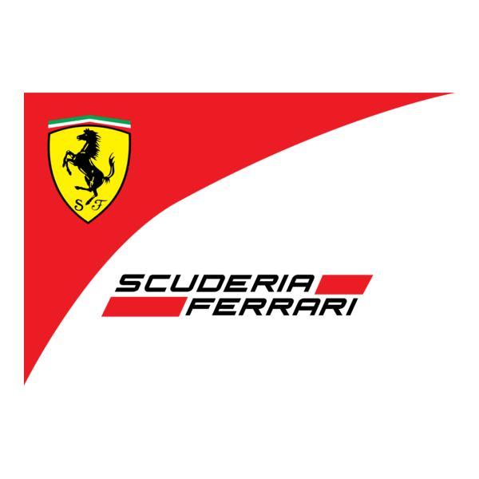
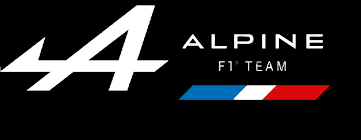
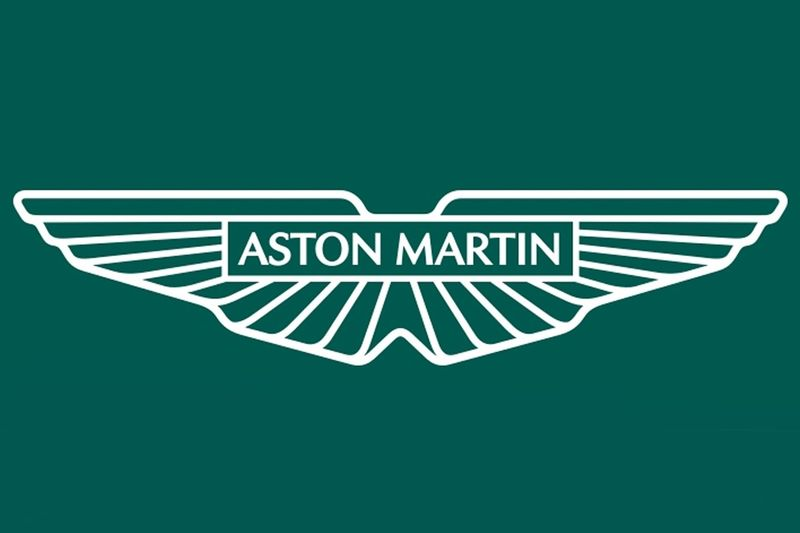
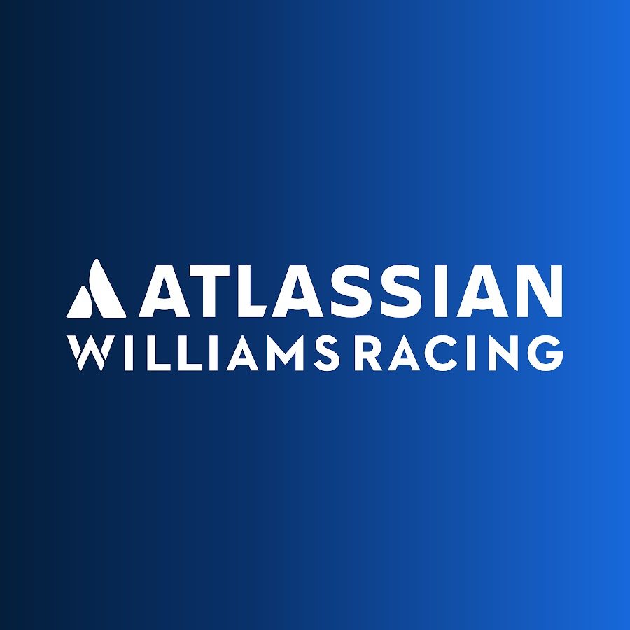

Mercedes-AMG Petronas Formula One Team

Fundado en 1954, Mercedes es uno de los equipos más exitosos en la historia de la F1, especialmente en la era híbrida, dominando la competición desde 2014 hasta 2020. Con pilotos de élite como Lewis Hamilton y Nico Rosberg, el equipo ha logrado múltiples campeonatos de constructores y pilotos. Su enfoque se basa en la innovación tecnológica y la eficiencia, utilizando motores híbridos de alto rendimiento. Mercedes tiene una de las instalaciones más avanzadas en Brackley, Reino Unido. La escudería es conocida por su fiabilidad y por ser un referente en el desarrollo de unidades de potencia. Además de su éxito en la pista, Mercedes también es un líder en sostenibilidad y compromiso con la electrificación en la automoción.
Red Bull Racing

Red Bull Racing debutó en 2005 y rápidamente se convirtió en una potencia dominante en la F1. Su era de mayor éxito comenzó en 2010, cuando ganó cuatro campeonatos consecutivos de pilotos con Sebastian Vettel. El equipo, con sede en Milton Keynes, Reino Unido, se caracteriza por su enfoque en la juventud y el talento, habiendo promovido a pilotos como Max Verstappen. Red Bull es conocido por su diseño innovador de chasis y por su asociación con Renault, y ahora con Honda en las unidades de potencia. La marca es famosa por sus gráficos llamativos y su vínculo con el mundo de la cultura pop y el deporte extremo. En los últimos años, ha sido el principal competidor de Mercedes, luchando por el campeonato de constructores y pilotos.
Scuderia Ferrari
Ferrari es el equipo más antiguo y prestigioso en la historia de la Fórmula 1, fundado en 1929 por Enzo Ferrari. A lo largo de las décadas, ha sido sinónimo de pasión, rendimiento y tradición. Con sede en Maranello, Italia, Ferrari ha ganado múltiples campeonatos mundiales, aunque no ha ganado un título de pilotos desde 2007. A pesar de la presión constante, Ferrari sigue siendo un contendiente fuerte debido a su rica historia, su poderosa infraestructura y su enfoque en la innovación tecnológica. Ha contado con grandes pilotos como Michael Schumacher, Kimi Räikkönen y, más recientemente, Charles Leclerc y Carlos Sainz. El equipo es un emblema del automovilismo y uno de los mayores íconos del deporte motor.
Alpine F1 Team
Alpine, anteriormente conocido como Renault, es una escudería con una larga tradición en la Fórmula 1. Fundado en 1977, Renault ha sido tanto proveedor de motores como equipo de fábrica, logrando éxitos como los campeonatos de pilotos y constructores en 2005 y 2006 con Fernando Alonso. En 2021, Renault reestructuró su equipo y lo rebautizó como Alpine, haciendo énfasis en su división de coches deportivos. Alpine busca constantemente el desarrollo de su unidad de potencia y su chasis, con el objetivo de volver a la lucha por el podio. Con pilotos como Esteban Ocon y Pierre Gasly, Alpine continúa su misión de consolidarse entre los equipos más competitivos de la F1.
McLaren Formula 1 Team

McLaren es una de las marcas más reconocidas de la Fórmula 1, fundada en 1963 por Bruce McLaren. El equipo ha tenido un impacto significativo en la historia de la F1, con victorias legendarias y un enfoque constante en la innovación técnica. McLaren fue dominante en los años 80 y 90, con pilotos como Ayrton Senna y Alain Prost. Después de un período de dificultades, el equipo ha vuelto a ser competitivo en los últimos años gracias a su asociación con Renault y, posteriormente, con Mercedes en las unidades de potencia. Además, McLaren sigue siendo pionero en el uso de la tecnología, la aerodinámica y la estrategia de carrera, buscando siempre el regreso a la cima.
Aston Martin Formula One Team
Aston Martin se reincorporó a la F1 en 2021 bajo este nombre, luego de una reestructuración del equipo Racing Point. La escudería, dirigida por Lawrence Stroll, tiene como objetivo posicionarse entre los equipos punteros. Aunque Aston Martin tiene una historia limitada en la F1, el equipo ha tenido éxito con pilotos como Sergio Pérez y Lance Stroll, buscando constantemente mejorar su rendimiento. El equipo se centra en el desarrollo de su chasis y en la optimización de sus motores, manteniendo siempre una fuerte orientación hacia el futuro. A medida que la marca Aston Martin crece en el automovilismo, también lo hace su presencia en la F1, buscando volver a ser una potencia competitiva.
Alfa Romeo F1 Team

Alfa Romeo tiene una presencia histórica en la Fórmula 1, siendo uno de los primeros equipos en la competición desde los años 50. En 2018, Alfa Romeo regresó al gran circo como patrocinador y proveedor de unidades de potencia para Sauber, que se convirtió en Alfa Romeo Racing. Aunque el equipo no ha sido un contendiente al título en tiempos recientes, su estabilidad y capacidad de lucha por puntos lo hacen un equipo constante en la zona media de la parrilla. Alfa Romeo también ha sido un equipo de desarrollo, con una fuerte orientación hacia la mejora de sus sistemas de chasis y motor. Actualmente, sus pilotos, Valtteri Bottas y Zhou Guanyu, siguen luchando por posiciones destacadas en cada carrera.
Haas F1 Team
Haas es una escudería relativamente nueva en la Fórmula 1, debutando en 2016. Aunque no tiene la historia o los recursos de los equipos más grandes, Haas ha demostrado ser competitivo en ciertas temporadas, destacándose especialmente por su enfoque pragmático y su relación con Ferrari. El equipo, dirigido por Gene Haas, ha aprovechado su asociación con Ferrari para mejorar sus motores y chasis, mientras que su estructura compacta le permite centrarse en el rendimiento y la eficiencia. Haas sigue siendo un equipo de medio campo, pero ha mostrado progreso constante con pilotos como Kevin Magnussen y Nico Hülkenberg. A pesar de los retos, el equipo continúa buscando maneras de mejorar su competitividad.
Williams Racing
Williams es otro de los equipos históricos de la F1, fundado en 1977 por Sir Frank Williams. Durante las décadas de los 80 y 90, el equipo fue uno de los más dominantes, ganando múltiples campeonatos de constructores y pilotos con grandes nombres como Nigel Mansell, Alain Prost y Damon Hill. Sin embargo, en años recientes, Williams ha caído en dificultades, luchando por mantener su competitividad. A pesar de esto, el equipo sigue siendo un pilar en la historia de la Fórmula 1. Ahora bajo la propiedad de Dorilton Capital, Williams sigue buscando recuperar terreno, con pilotos como Alexander Albon y Logan Sargeant, mientras intenta encontrar un camino de regreso a la parte delantera de la parrilla.
AlphaTauri

AlphaTauri, anteriormente conocido como Toro Rosso, es un equipo vinculado a Red Bull, con un enfoque en el desarrollo de jóvenes pilotos y talento emergente. Fundado en 2006, el equipo ha tenido altibajos en su rendimiento, pero ha sido hogar de pilotos prometedores como Sebastian Vettel, Daniel Ricciardo y Pierre Gasly. AlphaTauri se destaca por su énfasis en la eficiencia aerodinámica y en el desarrollo de chasis. Aunque no tiene los recursos de los equipos más grandes, AlphaTauri busca constantemente maximizar su rendimiento con unidades de potencia Honda. El equipo sigue siendo un competidor interesante, luchando por puntos y buscando siempre aprovechar las oportunidades durante cada temporada.